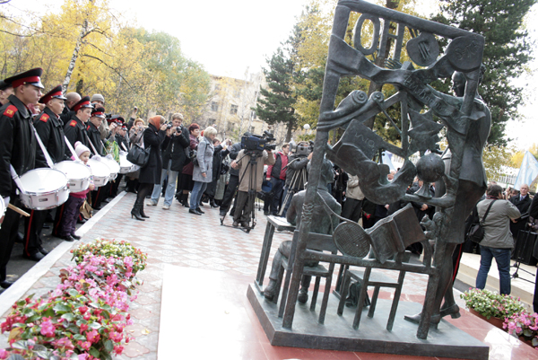

В 2010 году в Томске появился памятник Учителю. Торжественное открытие скульптурной композиции «Учительница первая моя» состоялось 5 октября в Учительском сквере Томского государственного педагогического университета.
Автор памятника - член Московского Союза художников Олег Киевский. Скульптор изобразил учительницу, стоящую у символической доски и юного ученика, сидящего за партой. Изначально, по задумке мастера, парта должна была быть одноместной, однако было принято решение сделать её двухместной, чтобы любой желающий мог сесть рядом с учеником и сфотографироваться.
В конкурсе на лучший проект памятника приняли участие 12 скульпторов - из Санкт-Петербурга, Москвы, Подмосковья, Екатеринбурга, Томска, Асина, и Стрежевого.
Адрес: г. Томск, Учительский сквер на ул. Герцена (Советский р-он)